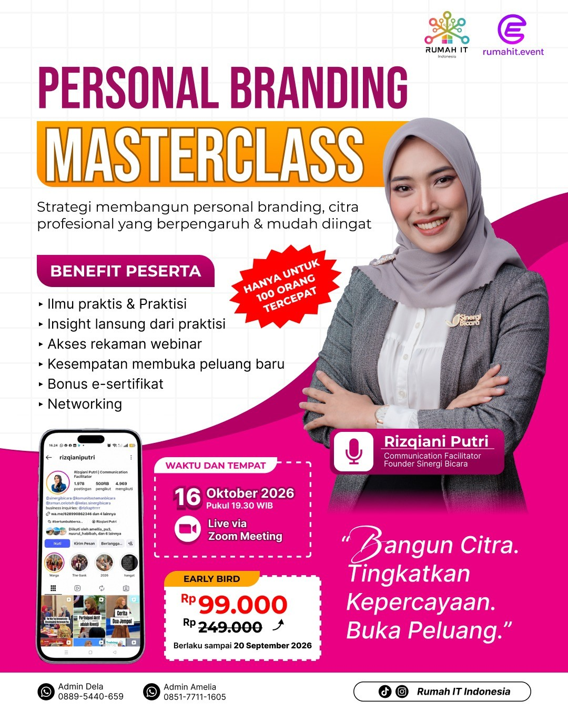
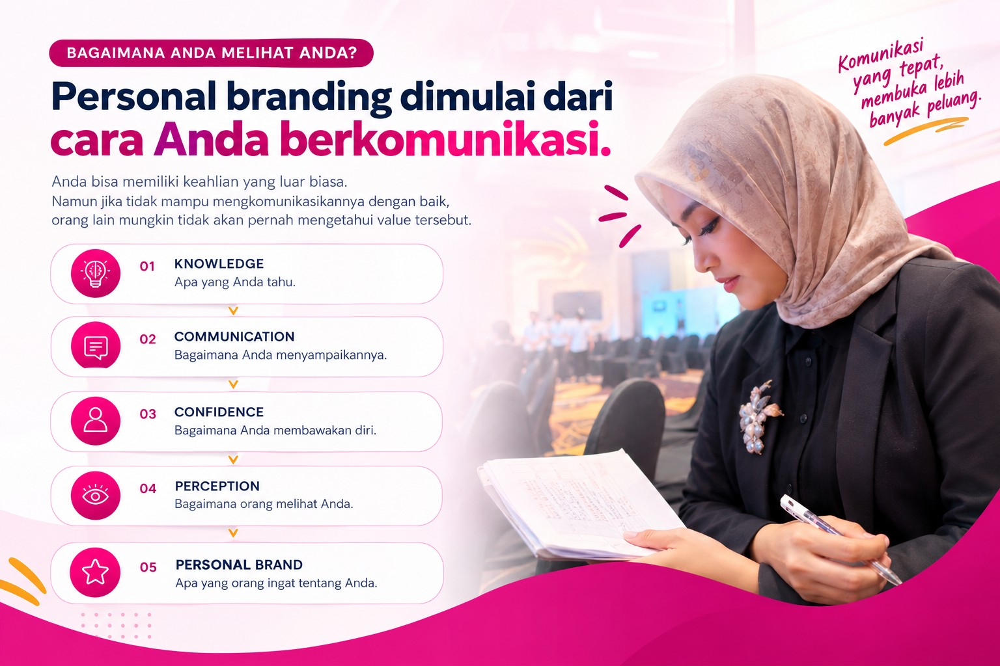
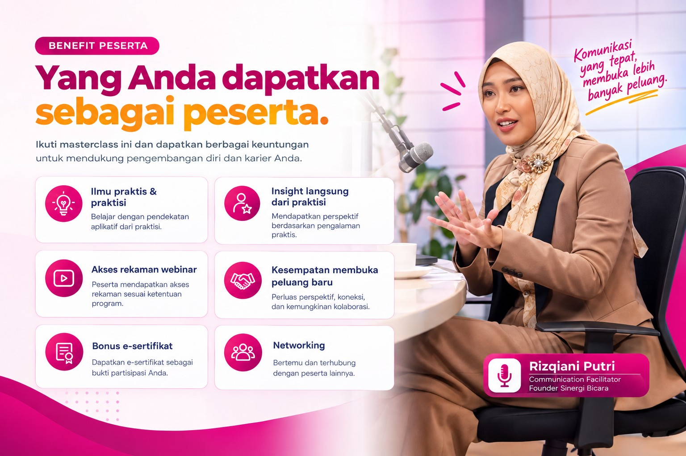

Public Speaking PRESENTS
Punya Kemampuan Hebat
Tapi Belum Dikenal?
Keahlian saja belum cukup. Cara Anda berbicara, membawa diri, dan menyampaikan value ikut menentukan bagaimana orang melihat dan mengingat Anda.

KNOWLEDGE
Personal branding bukan tentang pura-pura menjadi orang lain.
Personal branding membantu Anda menemukan, memperjelas, dan mengkomunikasikan keunikan serta value diri secara konsisten.

Public speaking bukan hanya soal tampil di depan banyak orang. Ini tentang menyampaikan ide dengan jelas, percaya diri, dan membuat audiens memahami value Anda.
APA YANG AKAN ANDA BAWA PULANG?
Lebih jelas. Lebih percaya diri. Lebih mudah diingat.

MEET THE SPEAKER
Rizqiani Putri
Communication Facilitator
Founder Sinergi Bicara
Belajar membangun komunikasi yang lebih kuat untuk mendukung citra profesional dan personal branding Anda.
COCOK UNTUK ANDA YANG...
Ingin dikenal karena value, bukan sekadar tampil.
WAKTU & TEMPAT
16 Oktober 2026
19.30 WIBLive via Zoom Meeting
Rp99.000
Berlaku sampai 20 September 2026
Kuota hanya untuk 100 orang tercepat.FAQ
Pertanyaan yang sering ditanyakan.
Apakah acaranya online?
Ya. Acara dilaksanakan secara live melalui Zoom Meeting.
Kapan acara dilaksanakan?
16 Oktober 2026, pukul 19.30 WIB.
Apakah cocok untuk pemula?
Ya. Materi dapat diikuti oleh pemula maupun peserta yang ingin memperkuat personal branding.
Berapa harga tiketnya?
Early Bird Rp99.000 dari harga normal Rp249.000.
Apakah ada rekaman webinar?
Ya. Peserta mendapatkan akses rekaman webinar.
Apakah mendapatkan sertifikat?
Ya. Peserta mendapatkan bonus e-sertifikat.
SIAP MEMBANGUN PERSONAL BRANDING?
Bangun Citra.
Tingkatkan Kepercayaan.
Buka Peluang.
Amankan Early Bird Anda sebelum kuota 100 peserta terpenuhi.
DAFTAR SEKARANG → 16 Oktober 2026 · 19.30 WIB · Live via Zoom